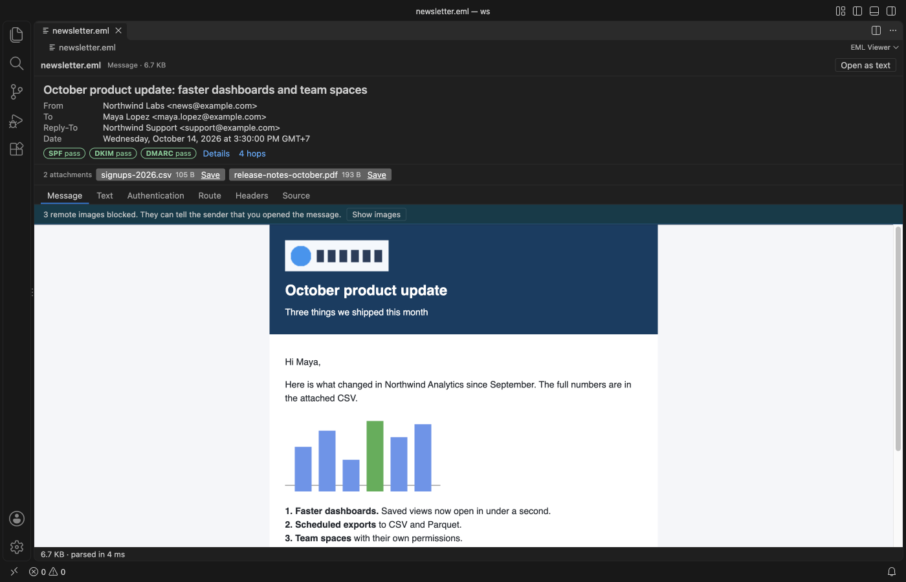
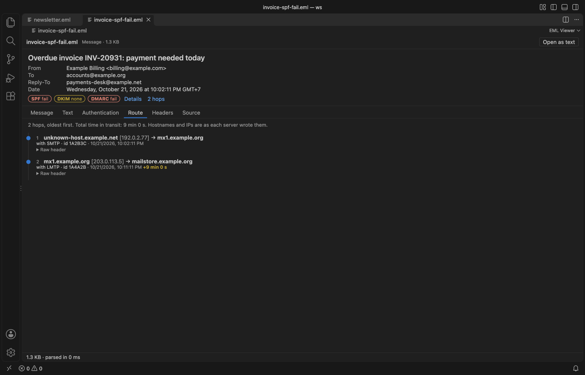
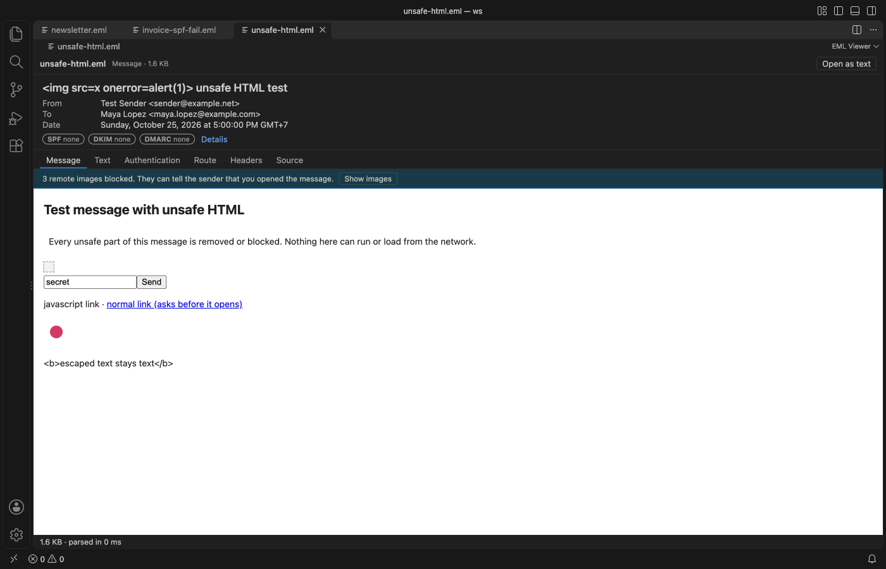

EML Viewer & Email Preview, Headers & MBOX
EML Viewer & Email Preview, Headers & MBOX, a VS Code extension by Zovo
Free. SPF/DKIM/DMARC checks, remote images blocked. EML viewer and email viewer for .eml, .emlx and .mbox files in VS Code. See the HTML, attachments, authentication results and the delivery route. Offline.
Free, MIT license. Needs VS Code 1.90.0 or newer. Extension ID zovo.eml-viewer, version 0.2.0.
Read saved .eml, .emlx and .mbox email files in VS Code the way a mail client shows them, with remote images blocked until you ask for them.

Real output from VS Code 1.142 on macOS. The file is newsletter.eml, made by scripts/make-samples.js with made-up people at example.com. scripts/e2e-vscode.mjs installed the packaged extension in a clean VS Code profile, opened the file and saved the window through the debug port.
- Opening a message doesn't tell the sender. Tracking pixels and other remote images stay blocked, and the bar says how many there are. One click shows them for that tab. Inline
cid:images and attachments come from the file itself, so they always show. - You can check where a message came from. The badges show the SPF, DKIM and DMARC results that the receiving server recorded, and the Route tab lists every Received hop with the delay between hops.
- Whole mailboxes open fast. A
.mboxfile is indexed as a stream, so the first 200 messages show while the rest is still being read. A 42 MB mailbox with 39,000 messages was fully indexed in 0.3 s in our test. - Scripts in a message never run. The HTML body sits in a sandboxed frame without script rights, and scripts, frames, forms, meta refresh and
javascript:links are removed first.
Quick start
- Install EML Viewer.
- Click any
.eml,.emlx,.mboxor.mbxfile in the Explorer.
If another editor opens, right-click the file and pick "Open in EML Viewer", or use "Reopen Editor With..." from the editor title menu. That also works for mailboxes with no extension, such as Thunderbird's Inbox file. "EML Viewer: Get Started" in the Command Palette opens a short tour.
Questions people ask
Is EML Viewer & Email Preview, Headers & MBOX free?
Yes. EML Viewer & Email Preview, Headers & MBOX is free and MIT licensed.
How do I install EML Viewer & Email Preview, Headers & MBOX?
Click "Install in VS Code" above, or search for zovo.eml-viewer in the Extensions view.
What you see for each message
| Part | What it shows |
|---|---|
| Header card | Subject, From, To, Cc, Bcc, Reply-To (when it differs from From) and the date in your time zone |
| Badges | SPF, DKIM and DMARC results, green for pass, red for fail, yellow for none or neutral |
| Attachments | Name, size and a Save button. Names are cleaned, so a name can't point outside the folder you pick |
| Message | The HTML body in a sandboxed frame. Links ask before they open in your browser |
| Text | The plain text part, or text made from the HTML when there is none |
| Authentication | Each Authentication-Results header, every DKIM signature (domain, selector, algorithm), Received-SPF and the ARC chain |
| Route | Received hops, oldest first, with hostnames, IPs, protocol, TLS and the delay between hops. Hops over 5 minutes are marked |
| Headers | Every header line, with Copy |
| Source | The raw message (the first 2 MB), with Copy |

The results are the ones the receiving server wrote. EML Viewer doesn't query DNS or check signatures again, which keeps it offline. A message from a Sent folder or written by a script often has no Authentication-Results header, and the tab says so.

Mailboxes

- Search matches sender, recipients and subject. Every word you type has to match.
- Sort by file order, newest or oldest first, sender, subject or size.
- The list shows 200 messages per page. Arrow keys, or J and K, move to the next and previous message.
- Each message is read from disk when you pick it, so a big mailbox doesn't fill memory.
- Both mboxo and mboxrd files work. A
Fromline only starts a new message at the top of the file or after a blank line, and>Fromquoting is undone.
Files and limits
| File | Notes |
|---|---|
.eml | One RFC 822 message, as saved by Outlook, Thunderbird, Gmail and most other clients |
.emlx | Apple Mail's format. The byte count line and the trailing property list are skipped |
.mbox, .mbx | Mailboxes from Thunderbird, Gmail Takeout, Apple Mail export and mail servers |
Files over 4 GB show a message instead of opening. A single message over 200 MB (setting emlViewer.maxMessageMB) also shows a message, and "Open as text" in the toolbar opens the raw file either way. Outlook .msg and .pst files are not supported.
Settings
| Setting | Default | What it does |
|---|---|---|
emlViewer.alwaysShowRemoteImages | false | Load remote images in HTML messages without asking. |
emlViewer.maxMessageMB | 200 | Largest single message that is parsed, in MB. |
emlViewer.askForRating | true | Ask for a Marketplace rating after 3 mail files that opened without an error, on 2 different days. "Later" asks one more time after 7 days, "No thanks" never again. It never asks after an error. Turn it off with false. |
emlViewer.showSupportLinks | true | Show the small Sponsor and More free viewers links in the status line. |
Privacy and safety
EML Viewer makes no network calls and has no telemetry. The only requests it can cause are the remote images you choose to show and the links you confirm. The mail file is never written. The only files the extension writes are the attachments you save, and it refuses to save over the mail file itself.
The webview runs under a strict Content Security Policy. Its scripts need a per-load nonce, and the message frame has no script rights at all. Subjects, names and header values are shown as plain text, so a subject such as `` stays text.

License
MIT. Messages are parsed with postal-mime (MIT-0). See THIRD-PARTY-NOTICES.md.
Guides
Install EML Viewer & Email Preview, Headers & MBOX
Click the button to open VS Code and install it, or press Ctrl+P (Cmd+P on macOS) in VS Code and run ext install zovo.eml-viewer.
Free, MIT license. Needs VS Code 1.90.0 or newer. Extension ID zovo.eml-viewer, version 0.2.0.
Source code and issues are on GitHub.
Support this work
If this extension saves you time, you can support the work on GitHub Sponsors. Monthly tiers start at $5, and one-time tiers start at $15. Sponsorship is optional, and the tool works the same without it.
Need your format supported?
Open a format request with a sample file, and I reply there whether it can be done. For USD 299 once, through this GitHub Sponsors tier, I add your file format or a missing feature to this extension, with tests, within 7 days.